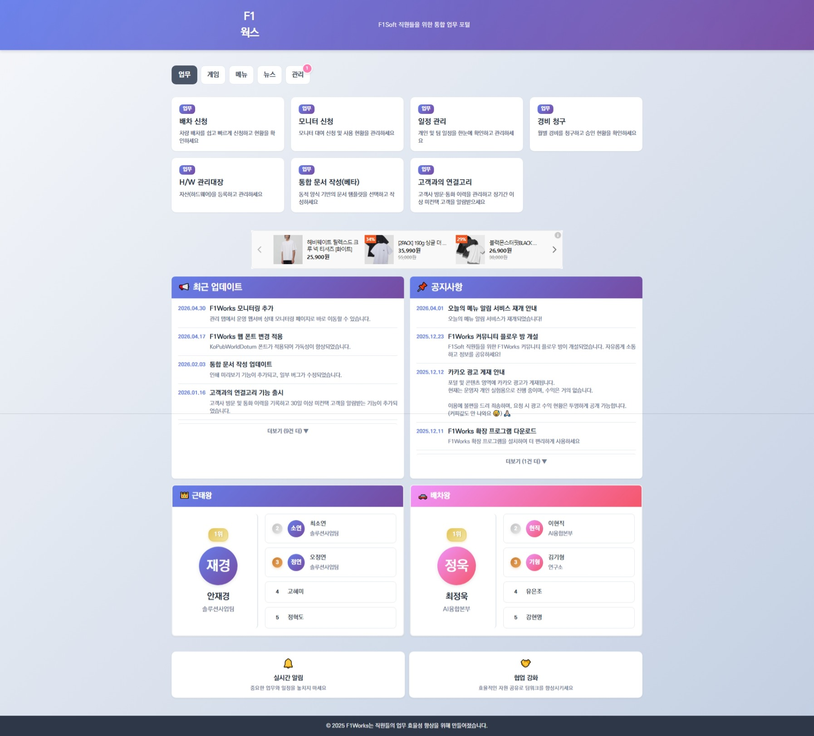
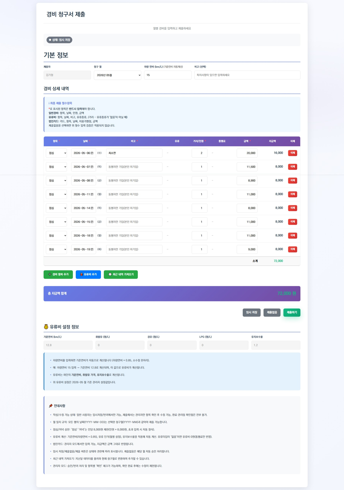
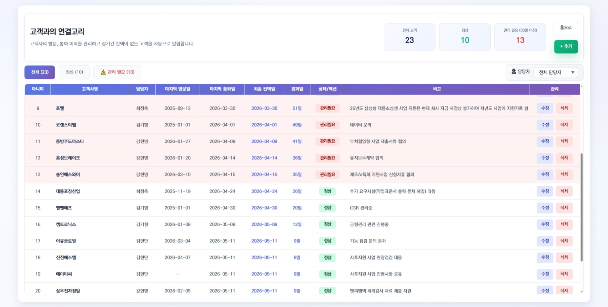
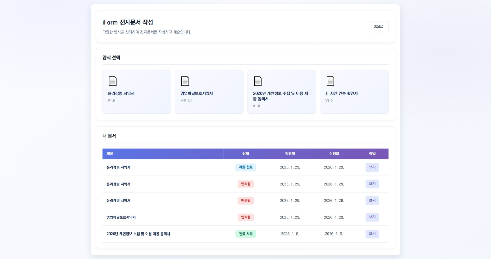
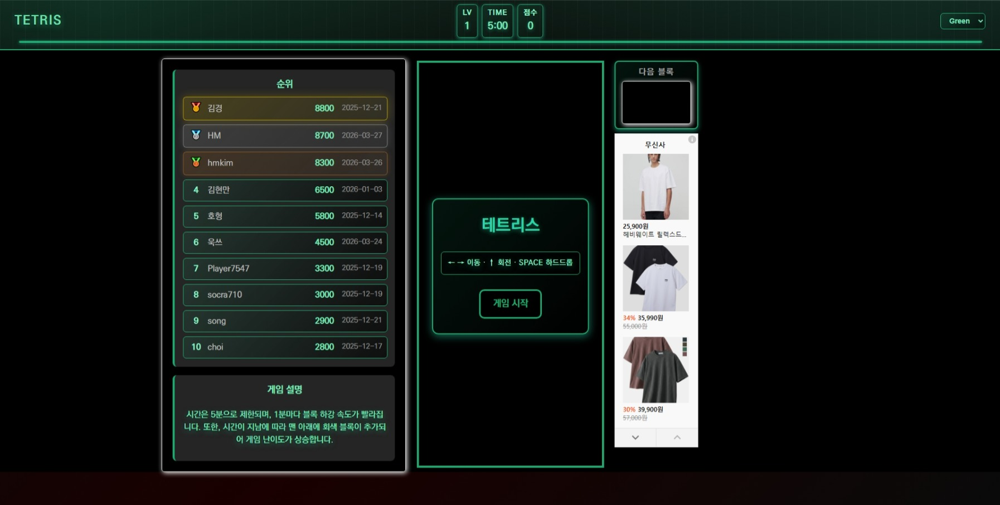
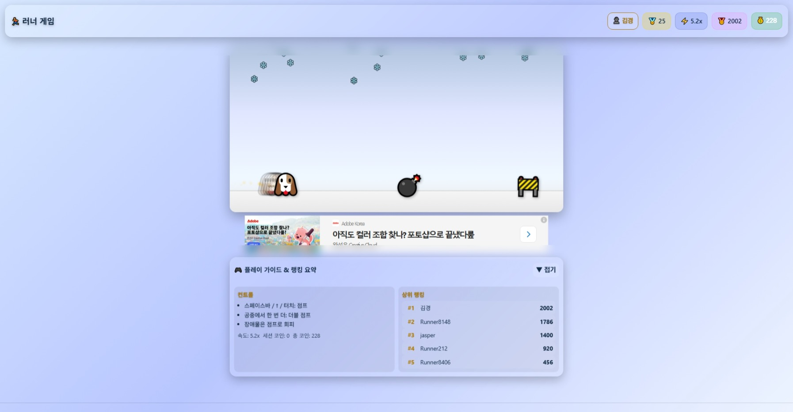
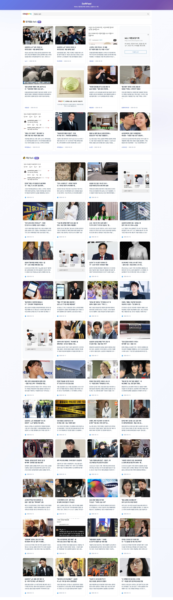
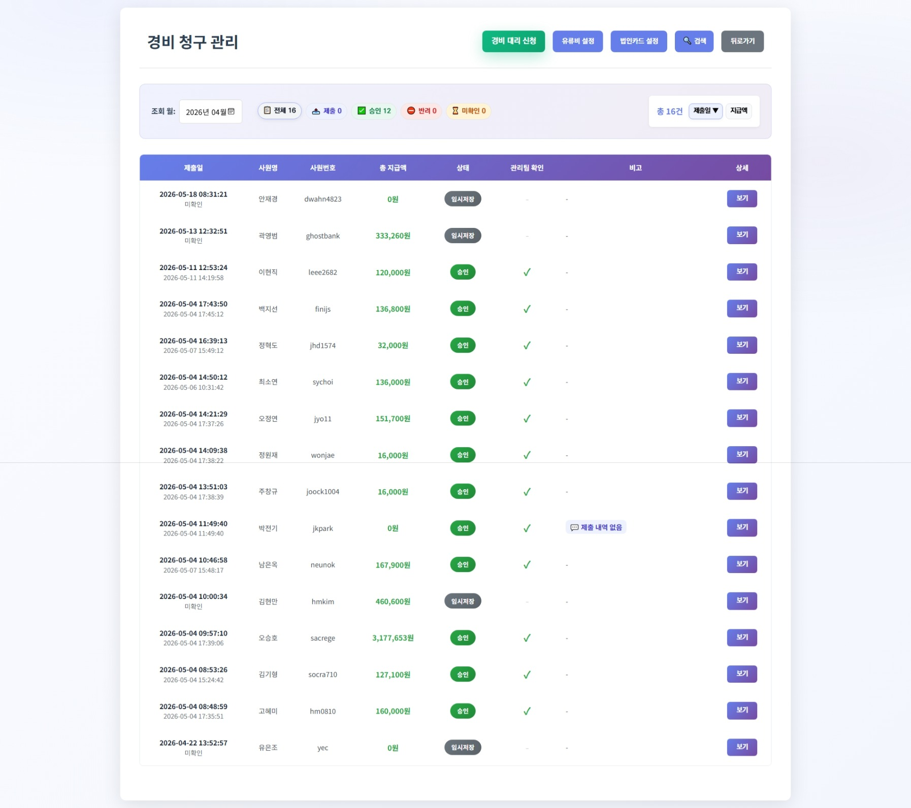
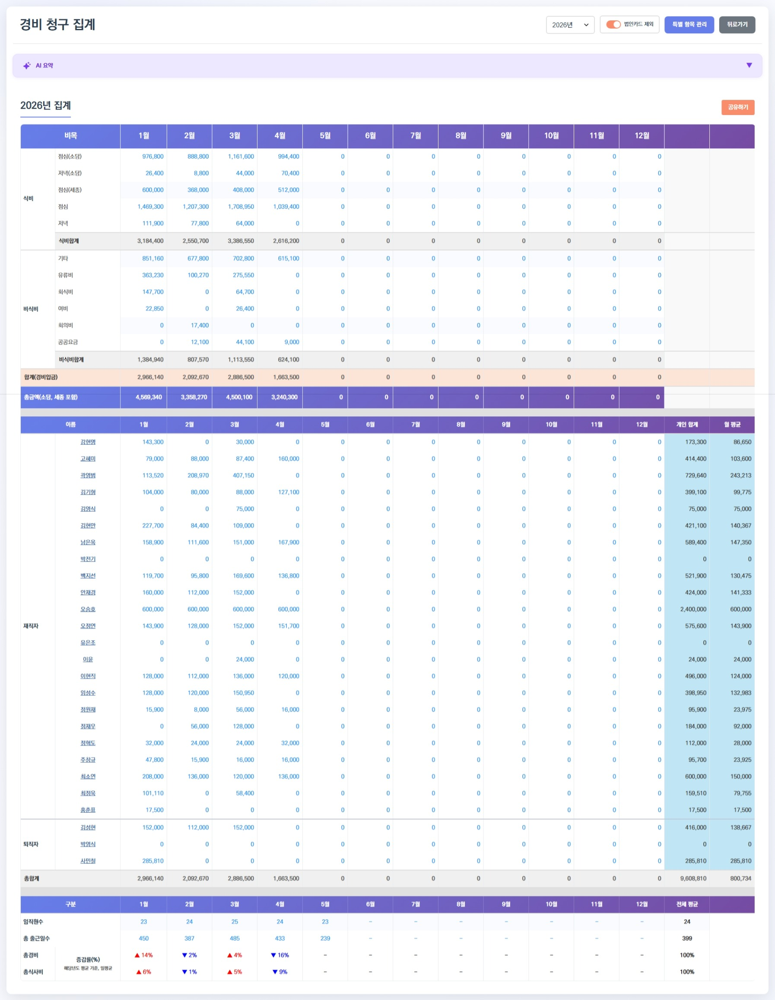
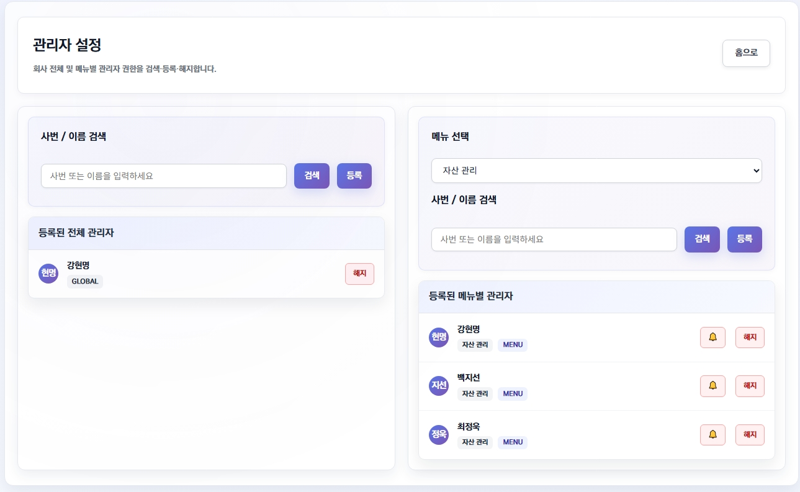

홈화면은 주요 기능으로 빠르게 이동할 수 있는 진입 지점입니다. 사용자 입장에서 자주 사용하는 메뉴와 최신 정보 접근을 한 곳에서 제공합니다.
- 카테고리별 기능 접근(업무, 게임, 메뉴, 뉴스, 관리)
- 주요 화면으로의 빠른 이동 허브
- 사용자 동선 중심의 통합 진입 구조
F1Works는 사내 업무를 하나의 흐름으로 연결해 사용하는 통합 플랫폼입니다. 사용자 업무 처리부터 관리자 운영까지 한 곳에서 확인하고 실행할 수 있도록 구성되어 있습니다.
홈화면은 주요 기능으로 빠르게 이동할 수 있는 진입 지점입니다. 사용자 입장에서 자주 사용하는 메뉴와 최신 정보 접근을 한 곳에서 제공합니다.

사용자 업무 흐름과 관리자 운영 흐름이 만나는 핵심 영역입니다. 실제 운영 중인 기능 7개를 포함합니다.



사내 사용자 참여도를 높이기 위해 3개의 게임 콘텐츠가 운영되고 있으며 점수/기록 관리가 연동됩니다.


업무 화면과 분리되지 않은 뉴스 확인 경험을 제공해 정보 접근 속도를 높입니다.

관리자 영역은 승인, 집계, 권한 설정, 문서 운영, 모니터링까지 포함해 운영 일관성을 보장합니다.



F1Works는 업무, 게임, 메뉴, 뉴스, 관리 5개 카테고리를 하나의 흐름으로 연결한 운영 플랫폼입니다.